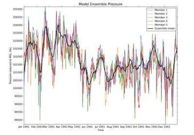

Recipes using cf¶
Version 3.15.0 for version 1.10 of the CF conventions.
Click on the keywords below to filter the recipes according to their function:


Calculating and plotting the global average temperature anomalies
Calculating and plotting the global average temperature anomalies


Comparing two datasets with different resolutions using regridding
Comparing two datasets with different resolutions using regridding

Plotting wind vectors overlaid on precipitation data
Plotting wind vectors overlaid on precipitation data

Converting from rotated latitude-longitude to regular latitude-longitude
Converting from rotated latitude-longitude to regular latitude-longitude

Plotting members of a model ensemble
Plotting members of a model ensemble

Plotting statistically significant temperature trends with stippling
Plotting statistically significant temperature trends with stippling